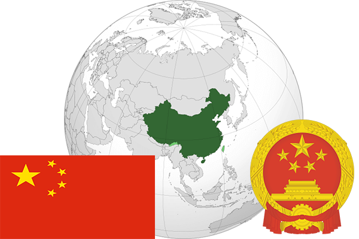

To`liq nomi: Xitoy xalq Respublikasi
Region: Sharqi Osiyo
Qonunchilik shakli: Respublika
Asos solingan: 1-oktabr 1949 -yil
Poytaxt: Pekin
Maydoni: 9 598 962 km² (dunyoda 3-o`rinda )
Chegaradosh davlatlari: Rossiya, Mog`uliston, Shimoliy Kareya, Vetnam, Laos, Myanma, Hindiston, Butan, Nepal, Qirg`iziston, Afg`oniston, Tojikiston, Kozog`iston.
Aholisi: 1 380 083 000 (dunyoda 1 -o`rinda, 2016 -yil roʻyxat)
Aholi zichligi: 143,7 /km²
Aholining o`rtacha yoshi: 72,95 yil ( 74,8 ayollar, 71,1 erkaklar)
Rasmiy tili: Xitoycha
Dini: Aksariyati Ateist, qisman Konfutsizm, daosizm va buddizmga e`tiqod qilishadi
Pul birligi: Xitoy yuani
Telefon prefiksi: +86
Internet domen: .cn
Xalqaro tashkilotlarga a`zoligi: BMT (1945 –yildan) Osiyo-Tinch okeani iqtisodiy hamkorlik tashkiloti, Tez rivojlanayotgan mamlakatlar (2001 yildan), Shanxay hamkorlik tashkiloti (2001-yildan)
Dengiz va okeanlarga chiqishi: Sharqiy-xitoy,Sariq va Janubiy-xitoy dengizlari
YIM: Butun: $ 20 trln, Jon boshiga: $ 16676 (2016 - yil roʻyxati)
Yirik shaharlari: Shanxay, Pekin, Chunchin, Guanjou, Tyanzin, Shanchzen